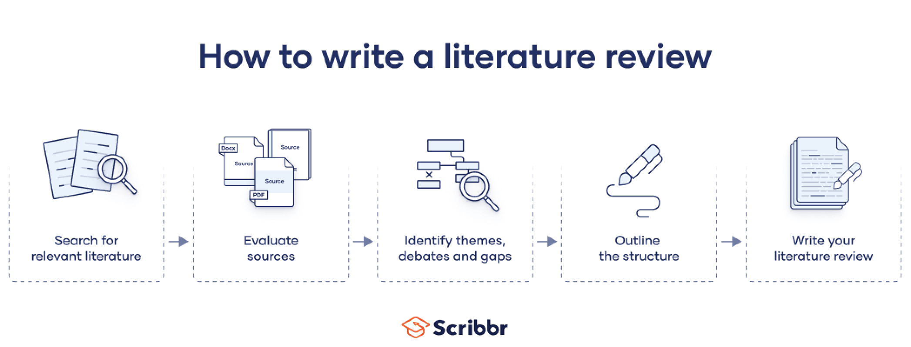
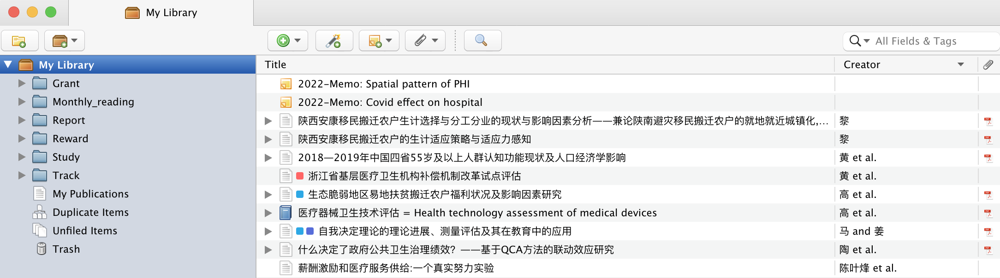

1 文献知识的获取与管理
1.1 引子
“读文献”应该是在科研生涯早期被导师要求进行的最多的科研活动了，足见文献的重要性1，但是很多同学起初对“读文献”是有些抵触的，常认为”读文献“没意思，光说不练，而多热衷于拿数据跑模型看统计显著性，我们当年还对“下现场”调研保留着颇高的兴趣，不知道近些年是否还是这样。那这样的现象是否正常呢？其实正常也不正常。说正常主要在于读文献需要带着问题去阅读，否则容易觉得枯燥，阅读文献的热情不高自然是正常现象。说不正常在于，若未经过深入的文献研究，直接开始处理数据分析结果，容易出现研究方法误用或是缺少创新性等问题。因此，依然要重视“读文献”，培养良好的文献阅读习惯是科学研究的基本要求，它也是科研工作中的重要组成部分。
那么，“读文献”的第一步就是检索文献了。如何在数以万计的文献中找到自己需要的研究，是一件具有挑战性的事情。刚刚进入研究生阶段的同学，面对这个问题的时候很多人都很茫然，从哪里检索文献？如何检索文献？哪些文献是应该要阅读的？等等，尽管这些在本科阶段都多少有课程讲解过，但是缺少实践的训练，很多人都忘得差不多了。
第二步自然就是阅读文献。如何快速地从大量的文献中筛选出高价值的文章，并且从这些文章中获得有用的信息，这些既需要大量的练习也有一些技巧，而刚进入科研领域的研究生在这一方面通常有些欠缺。
第三步就是管理文献了。少量的文献还可以较为从容进行存储和查找，但是如果当文献数量庞大，研究项目繁多，需要与其他研究组进行合作时，文献的管理工作就不可忽视了。建立良好的文献管理规范，对于研究组而言，是科研质量稳定且可持续性的重要保证2；对于个人而言，如果决定将科研作为自己的事业。那么阅读文献将有可能是伴随一生的工作3，在这个过程中积累下来的文献量将是很庞大，良好的文献管理习惯是发挥这些文献价值的重要途径之一。
文献检索是文献综述（Literature Review）的重要基础。文献综述的目的简单来讲就是为研究提供背景，对相关研究主题进行概述，了解相关知识点或者认知的前沿在哪里，以及还存在的差距（Research Gap）。文献综述是开展一项研究必不可少的环节，通过文献综述可以：
- 增加对研究主题及其学术背景的熟悉程度。
- 梳理并总结出研究的理论框架和方法。
- 掌握目前所开展的研究在文献中的位置。
- 归纳并提炼出当前开展的研究对相关领域的贡献。
文献综述的写作过程大体可以分为以下几个环节，如 图 fig-flowchart

但是，本书中将不会介绍如何撰写文献综述，而是介绍文献综述过程中会涉及的几个重要但容易被忽视的的环节，具体如下：
- 文献检索
- 文献阅读
- 文献管理
1.2 文献检索
1.2.1 文献检索平台
1.2.1.1 中文平台
中文文献资料检索平台主要有以下三个：
1.2.1.2 英文平台
英文文献的检索平台就相对丰富，各个出版集团基本都有自己的检索平台。首先简单介绍一下五大英文学术期刊出版集团：
爱思唯尔（Elsevier）：1880年成立，总部在荷兰，现属于英国RELX Group集团，Lancet及其子刊、Cell及其子刊均属于该出版社，是目前出版量排名第一的出版集团，开发有自己的文献管理软件Mendeley。
斯普林格（Springer）：德国出版集团，在2015年收购了Nature Publishing Group等几家出版社，现在旗下的出版社有：Nature、Springer、BioMed Central，出版量排名第二。
约翰威立（Wiley）：美国出版集团，创始于1807年，主要集中在科学、工业、医学等学术领域的方向，神刊CA-A Cancer Journal for Clinicians就属于该出版社旗下。
世哲（SAGE Publishing）：美国出版集团，创始于1965年，是世界第五大学术出版商。
电气和电子工程师协会（IEEE）：IEEE主要致力于在电气、电子、计算机工程和与科学有关的领域开发和研究。
另外还有几个顶级期刊不属于任何出版集团：
Science：由美国科学促进会（American Association for the Advancement of Science）出版。
The New England Journal of Medicine（NEJM）：由在马萨诸塞州医学会的NEJM出版社拥有和出版。
The Journal of the American Medical Association（JAMA）：美国医学会会刊，由美国医学会（American Medical Association）出版。
开放获取（Open Access）是近些年出现的一种学术期刊类别，是相对于之前closed access而言的。其实本质上是学术出版领域的一种新的商业模式，与pay-for-access model相对。
以往的学术期刊都是由图书馆和学术机构订阅，每年都需要支付大额的订阅费用，而读者也只有拥有一定的权限才能阅读。而OA期刊是由论文作者支付出版费用，读者可以免费获取，在一定程度上降低了学术论文的获取门槛，有利于研究成果的传播。
关于OA期刊目前还存在一定的争议，有部分学者认为发表OA期刊是在花钱买论文，而出版集团为了获取利益，存在降低发表论文质量的可能。但是，OA期刊的发展目前来看是一种趋势，许多顶级期刊也开始创办OA期刊，比如Nature Communications、Lancet Public Health、JAMA Network Open等等都是OA期刊。
了解了目前全球主要的学术期刊出版集团后，再介绍一下检索平台/数据库：
Web of Science（WoS）：WoS是由科睿唯安（Clarivate Analytics）公司开发的信息服务平台，数据来源于期刊、图书、专利、会议录、网络资源（包括免费开放资源）等。WoS所具有的三大引文索引系统（SCIE, SSCI, A&HCI）共收录了全球12400多种权威的、高影响力的国际学术期刊。WoS为非开放获取，提供的是收费服务，通常需要从学校图书馆进行访问。
ScienceDirect：是Elsevier旗下期刊的全文检索平台，为开放查询平台，可以查询Elsevie旗下出版期刊的论文和书籍等。
Scopus：是Elsevier于2004年11月推出的摘要和引文检索平台，虽然不直接提供全文下载服务，但是是目前全球规模最大的摘要和引文（A&I）数据库，涵盖了15000种科学、技术及医学方面的期刊，该数据库完整收录了Elsevier, Springer, Science等来自全球5000家出版社的20500多种经同行评议的出版物。
Wiley Online Library：是Wiley出版期刊的全文检索平台，开放查询。
PubMed：美国国立医学图书馆国家生物技术信息中心提供的免费MEDLINE检索服务，主要提供免费的生物医学文摘型数据库检索服务。
SCI-HUB：SCI-HUB当然是不可少的，以上平台提供的都是免费检索服务（WoS和Scopus除外），但是对于非OA期刊的文献下载是需要购买授权的，而SCI-HUB可以提供免费的文献下载服务。当然了，正是因为这一点，SCI-HUB一直在受到几大出版集团的打压。关于SCI-HUB是什么，看一下它的slogan就清楚了：the first website in the world to provide mass & public access to research papers。
Science Citation Index Expanded (SCIE，科学引文索引，一般也统称为SCI) 历来被全球学术界公认为最权威的科技文献检索工具, 提供科学技术领域最重要的研究信息。共收录了8600多种自然科学领域的世界权威期刊，覆盖了176个学科领域。
Social Sciences Citation Index（SSCI，社会科学引文索引）是一个涵盖了社会科学领域的多学科综合数据库，共收录3000多种社会科学领域的世界权威期刊，覆盖了56个学科领域。
其实，中文也有与SCIE和SSCI相对应的期刊收录库，分别是CSCD和CSSCI，具体如下：
中国科学引文数据库(Chinese Science Citation Database，简称CSCD)。创建于1989年，收录我国数学、物理、化学、天文学、地学、生物学、农林科学、医药卫生、工程技术和环境科学等领域出版的中英文科技核心期刊和优秀期刊千余种。
中文社会科学引文索引（Chinese Social Sciences Citation Index，缩写为CSSCI，一般也称作“C刊”或者“南大核心”）。由南京大学中国社会科学研究评价中心开发研制的数据库，用来检索中文社会科学领域的论文收录和文献被引用情况，是我国人文社会科学评价领域的标志性工程。目前收录包括法学、管理学、经济学、历史学、政治学等在内的25大类的500多种学术期刊。
1.2.2 文献检索方法
检索文献是比较简单的一件事情，无非就是通过关键词查询文章，但是完成一项系统的文献检索工作并不容易，何为系统，那就是快速、准确且全面，想要做到这三点，就需要按照一定的程序进行文献的检索，也就是要制定好检索策略。
检索策略通常可以分为三个部分：
- 检索目的：就是确定检索主题和检索范围。
- 检索主题：通常根据研究问题来确定相关联的文献，比如研究医疗保险支付方式对医生诱导需求行为的影响，那么关联的文献将主要包括“医疗保险支付方式的效果”和“医生诱导需求”两个方面。
- 检索范围：通常包括数据库、时间、文献类型（Article或Review等）、文献语言（中文或英文）。通常要对多个数据库检索，如WoS、Pubmed、Science Direct、Wiley等均需检索到，原因其实在前文已经给出，因为不同的数据库收录的文献范围不一样，为了避免遗漏，最后对多个数据库检索。
- 检索词的选择：检索词可以是标题/摘要关键字、作者、医学MeSH主题词、索引号等。
- 合理运用AND、OR、NOT、*、？等检索符。
- 对于词组的检索，合理使用“”，如Health Policy和“Health Policy”检索得到的结果将不一样，前者得到的是Health OR Policy的结果，后者得到的是Health AND Policy的结果。
- 检索结果入选和排除标准：也就是文献的筛选标准
- 数据库收录情况，如SCIE和SSCI收录，通常而言，收录标准较高的期刊，其发表的文章质量更高。
- 重视高被引论文。
- 尽量选择5年内的研究，如果是对学术史进行梳理，时间范围可以放宽。
- 检索结果的记录与存档：
- 做好检索词以及检索时间的记录，以便日后核对和溯源检索结果。
- 合理运用数据库的批量导出功能，将不同的检索词得到的结果分类导出。
1.3 文献阅读
文献分为泛读和精读两种策略。因为文献的质量不一样，时间也有限，并非所有的文献都需要从头到尾的仔细阅读。
泛读：顾名思义，就是泛泛而读，初步浏览Abstract、Introduction和Result之后，对研究问题、研究方法和研究发现有了解了，若发现其对自己的研究启示意义不大，即可无需再详细阅读。
精读：即是对泛读过程中发现的好的文献，进行逐字阅读，除了完全掌握文献中的研究方法和研究结论外，也要对作者的图表展示、行文技巧进行学习，弄清楚作者是如何构思的，以便在自己写作过程中能够有所借鉴。
文献阅读顺序：一篇科学论文的内容一般是按照Abstract、Introduction、Method、Result、Discussion和Conclusion的顺序印刷的（部分期刊除外），但是阅读时的顺序并非是这样，一般情况下先读Abstract，对全文有一个大致了解，这也是摘要的作用；然后再读Introduction，了解文章的研究问题、研究动机、研究的贡献；接着再需要读的应该是Result，从图表中掌握研究的主要发现，带着问题去看Discussion，了解作者是如何对研究结果进行解释，最后才是Method和Conclusion。
1.4 文献管理
1.4.1 文献管理体系
如前文述，文献管理规范对于保证研究质量十分重要，本节就介绍如何形成个人的文献管理规范，搭建文献管理体系。所谓规范或是体系，其实就是一套可以重复并推广的标准化流程，文献管理体系主要包括两部分：
- 一是文献及原始论文管理。
- 二是阅读文献后的笔记管理。
这里介绍两种不同的管理文献的思路：
项目式：也就是按照研究项目进行文献和笔记的管理，文献及笔记和其他项目文件存储在一起，这样的好处利于项目文件的管理，但是缺点也很明显，就是容易导致文献重复，且查找效率低。
集中式：也就是将所有的文献和笔记集中管理（如 图 fig-2），建立索引，我个人比较推荐此种方式，因为其具有较高的文献查找效率。

建议统一下载为PDF格式，不推荐使用知网的CAJ格式，原因有二，一是CAJ格式需要CAJViewer阅读器才能打开，实在无必要多此一举，CAJViewer并没有比常见的PDF阅读器更优秀；二是CAJ是是中文本土格式，不利于对外进行文件交流。
下载的文件最好建立起统一的命名规则，便于快速的查找并定位文献，如Author-Year-Short Title。 （Li and Zhou - 2005 - Political turnover and economic performance: the incentive role of personnel control in China）
1.4.2 文献管理工具
主流的文献管理工具基本如 表 tbl-software :
| 软件名 | 开发商 | 中文支持 | 推荐指数 | 是否收费 |
|---|---|---|---|---|
| EndNote | 科睿唯安（Clarivate Analytics） | 一般 | *** | 收费 |
| NoteExpress | 北京爱琴海乐之 | 优秀 | * | 免费 |
| Zotero | 开源社区 | 一般 | *** | 免费 |
| Mendely | 爱思唯尔（Elsevier） | 一般 | ** | 免费 |
而对于文献笔记，可用的工具就非常多了，如印象笔记、Notability、Obsidian等。Zotero 6.0版本以后也有非常好的文献笔记体验。推荐在选择文献笔记工具时应至少支持两项功能，一是可以云同步，二是支持Markdown。
1.4.3 文献管理软件在论文写作中的应用
任何科学研究都是建立在前人的研究基础上的，因此论文、报告等学术成果的写作都需要引用参考文献。参考文献的引用本来不复杂，但是由于不同的出版方对参考文献的引用格式各不一样，就导致引用参考文献这件事情变得特别繁琐。
对于文献数量较少时，花费一定的时间手动去调整还可以接受，若是文献数量多加之文稿篇幅长，那么如果继续沿用人工手动方式就会占用非常多的时间，比如下面两种场景，但凡想一想就会觉得头大：
科研活动中很常见的一种情况就是论文的投稿，而投稿过程中因为拒稿、撤稿等原因需要更换不同的期刊的情况十分常见，而不同的期刊都有各自的文献引用格式要求，如果每次改投期刊时都去手动进行修改，将会是一件十分费事且低效率的行为。
对于动辄上百页的学位论文、结题报告等，其参考文献等引用数量都非常可观，而通常都会经历多轮次的修改。若是采用GB-7714的序号引用格式4，当文献引用的顺序在修改过程中被调整，那么就需要对最后对参考文献进行重新排序，这也会是一件让人头疼不已的事情。
幸运的是，以上工作可以由 表 tbl-software 中的文献管理软件完成。但是最好不要把这些软件仅当作文献引用的工具使用，其可以在整个文献知识的获取和管理中发挥非常有用的作用。
当然了，这并不意味着所有的研究都需要从“读文献”这一步开始，这个问题以后再讨论。↩︎
为什么这么说，是因为一项规范的科学研究通常不是一蹴而就的，项目周期长，就需要不断的跟踪和更新该研究主题下的最前沿文献，而研究生又是研究组中重要的人员构成了，但是研究生是一个流动的群体，毕业就离校了，那么如何做好研究项目的交接，如何保证不断的交接过程中研究质量一直保持稳定，文献管理就是其中很重要的一个环节。↩︎
这其实是个很高的要求，很多人在半路就未能再坚持下去。↩︎
GB-7714是中文出版物中应用最广泛的参考文献引用格式，如：[1] 高义民，张凤华，邢建东等．颗粒增强不锈钢基复合材料冲蚀磨损性能研究［J］．西安交通大学学报，2001，35(7)：727-730．↩︎